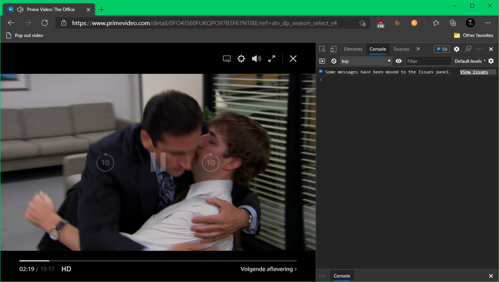
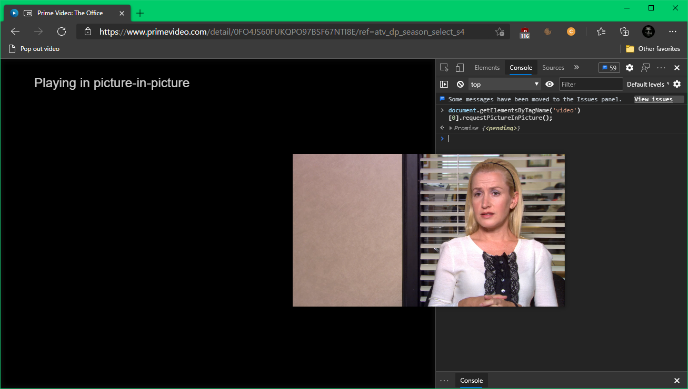
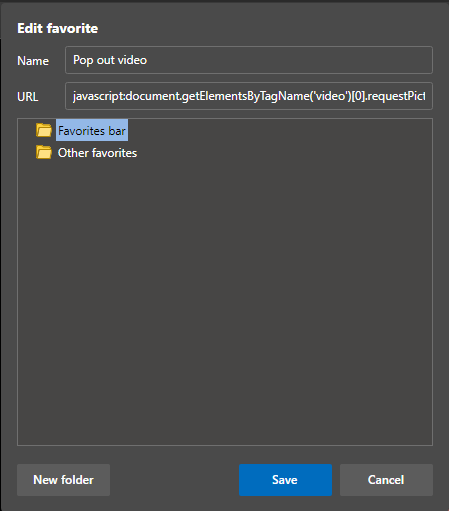

Microsoft Edge Picture-in-Picture
Small update: Edge now supports picture-in-picture with a little button out of the box! So you no longer need the code snippet.
Here's a quick little helper to pop out video players in Microsoft Edge.
requestPictureInPicture
Edge (like Chrome these days) supports picture in picture mode for videos but it's not always apparent how to actually pop out a videoplayer. Here's a quick one-liner that you can try in the browser console:
document.getElementsByTagName('video')[0].requestPictureInPicture();
Run this in a page where a video element is present and it will unlock the actual video element from the browser for you to place wherever you want, right on top of all your other windows.
Before

After

Automate that
Because I want this to easy-access and don't want to type this into the console every time, we can create a bookmarklet that will do this for us. Here's how you do it:

- Create a new bookmark (from any page, we'll replace the url later)
- Edit the bookmark and give it a nice title
- In the URL part put
javascript:document.getElementsByTagName('video')[0].requestPictureInPicture(); - Save the bookmark.
Now when you are on a page that plays video (Youtube, Twitch, as shown - Prime Video, etc) you can click the bookmark and the video will continue in picture-in-picture mode. It is of course a quick little hack and will only pop out the very first (if any!) <video> element.
Enjoy a resizeable always-on-top chromeless video player 📺